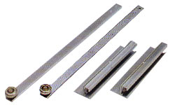
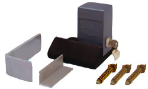
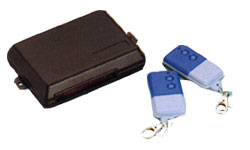
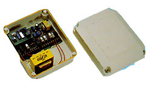
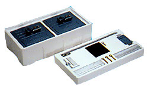

|
|
TYPE : A torquelimiting drive unit with D.C motor, speed reducer and Nylon Bush, (imported from West Germany) which grips between an output shaft and arm connected to a gate. The pressure exerted by the bush and the gate shaft is adjustable by radially tightening the bush with screws system.
| Motor Voltage Rating |
12 - 24V Direct Current (D.C) |
| Power Consumption |
25 watt per Actuator |
| Motor Rated load speed |
4800 rpm |
| Insulation Resistance |
1.5 mega ohm |
| Closing Speed (from 90 angle) |
6 - 8 sec |
| Max. Leaf Opening Angle |
180 |
| Max. Leaf Weight Allowable |
200 kg. |
| Driving Shaft |
Hard-chrome plated solid steel shaft |
| Casing |
Waterproof and rust resistance cast alloy |
| Trust Force |
= 50 kg |
| External Dimensions |
255 mm (L) x 240 mm (M) x 125 mm (H) |
|
|
|
|
|
| Actuator Arm & Bracket |
 |
|
TYPE : Nickel-chrome plated mild steel
Bearing : Fuji- 10-30A
Arm's Dimensions : 48 mm(L) x 25 mm(W) x 5 mm(H)
|
|
|
|
Solenoid Lock with Lock Keeper
L-Plate & Angle Plate and Keeper Screws |
 |
|
TYPE : This Lock is applicable for both outward and inward swing gates. Adjustable is simply done by reviewing the copper pinhead and spring plate.
| Rated Voltae |
24V direct current (D.C) |
| Lock Keeper |
Solid mild steel with PVC protective coating |
| Spring Plate |
Stainless steel |
| Manual Override |
Key operated cam-lock to enable manual operation in the event of power failure |
| Dimensions |
115 mm (L) x 70 mm (W) x 55 mm (H) |
|
|
|
|
| Transmitter & Receiver |
 |
|
TYPE : Battery-operated, crystal controlled frequency. Modulated radiowave
| Range |
Effective-50m. Maximum-100m |
| Passcode |
Set by 8x3 ways switches easily accessible and changed owner |
| Battery |
Under normal usage, a 12V battery should last 6 months |
| Case Size |
65 mm (L) x 35 mm (W) x 16 mm (H) |
|
|
|
|
| Control Panel (5 Amp fuse) |
 |
|
TYPE : Using State-of-the-art Microprocessor for reliable control and encased in weather resistant casing.
Power Supply : 230VAC, 5Amps, 50 HC
Power Supply is step down to 24V direct current to operate control panel, receiver, motors and electric lock.
- Dual speed gate control
- Automatic lighting control
- One gate-leaf operation available
- Half-way-stop operation selectable
- Battery backup with charges (optional)
- Control to stop immediately at any time when gate is moving
External Dimension : 310 mm (L) x 250 mm (W) x Depth-60
|
|
|
|
| complete Unit Package |
 |
|
2 motor actuators, a control box and complete accessories are firmly packed in moduled polystyrene foam material with an external box cover. Hence it is compact, easier to carry and no damage will be done due to transport handling.
External Dimension
| Length |
610 mm |
| Width |
310 mm |
| Height |
200 mm |
| Weight |
22 kg |
You should find the following items in our standard packing.
- 2 swing gate motor actuators
- One set of solenoid lock & locking keeper
- Actuator arm & bracket an extra
|
|